Utilaje prelucrare lapte
Instalatie de masurare volumetrica
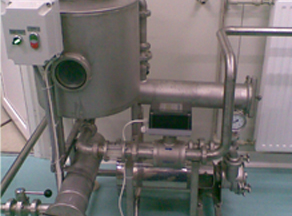
Asigura filtrarea, dezaerarea si masurarea volumetrica a laptelui receptionat.
Capacitati: 3000...10000 l/h
Componenta:
- 1 pompa autoabsorbanta
- 2 filtre cu sita inox
- 3 dezaerator
- 4 debitmetru pentru lapte
- 5 panou de comanda
Instalatie de pasteurizare lapte
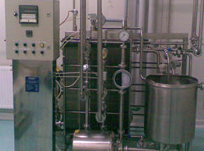
Asigura distrugerea bacteriilor patogene precum si a majoritatii microflorei banale din lapte prin tratamentul termic aplicat la diferite temperaturi (72...85º C)
Capacitati: 500...5000 l/h
Grad de recuperare a caldurii: min. 80%
Randament transfer termic: min .95%
Agent de pasteurizare: apa fierbinte sau abur
Componenta:
- 1 vas inox cu senzor de nivel si capac pentru alimentare aparat de pasteurizare
- 2 pompa centrifuga pentru alimentare pasteurizator
- 3 pompa centrifuga pentru suprapresiune
- 4 aparat de pasteurizare
- 5 aparate de masura si control (termometre, manometre)
- 6 racorduri pentru legare in circuit inchis a separatorului si omogenizatorului
- 7 inregistrator de temperatura pe suport de hartie
- 8 ventil pneumatic de recirculare a laptelui insuficient pasteurizat
- 9 suport inox
- 10 tablou de comanda si control
- 11 instalatia electrica si de automatizare ce asigura afisarea temperaturilor de pasteurizare a laptelui, inregistrarea temperaturii de pasteurizare pe suport de hartie si transmiterea datelor la sistemul de achizitie date
Instalatie preparare produse proaspete si smantana
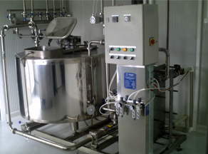
Capacitati: 500 – 1000 – 2000 l/sarja
Asigura pasteurizarea, mentinerea si racirea laptelui sau smantanii la temperatura de insamantare pentru preparare produse proaspete (iaurt, sana, lapte batut, chefir etc) sau smantana de consum.
Agent termic de incalzire: apa fierbinte de 98ºC
Agent de racire: - apa racita de 1ºC sau apa rece de retea
- 1 vas inox
- 2 schimbator de caldura cu placi
- 3 pompa recirculare produs pentru incalzire sau racire si transvazare produs la masinile de ambalare
- 4 instalatie electrica si de automatizare pentru programare parametri (temperatura, timp) cu posibilitatea de transmitere date la sistemul de achizitie date
Masina automata de ambalare la punga
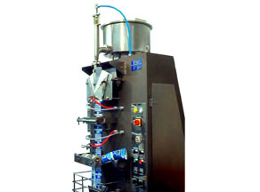
Capacitate: - max. 1800 buc/h
Cantitate dozata: - 500...1000 ml
Masina confectioneaza punga din folie de polietilena aflata in rulou, dozeaza laptele, inchide punga prin termosudare si marcheaza data prin presare mecanica. Pentru sterilizare folie, masina este dotata cu sistem de ultraviolete.
Masina SEMIAUTOMATA de ambalare la punga si pet
Capacitate: - cca. 300 buc/h
Cantitate dozata: - 500...1000 ml
Ambalaje:
- 1 pungi de polietilena preformate
- 2 butelii tip PET
Pentru ambalare la punga, muncitorul manipuleaza punga preformata de la dozare la lipire, iar dozarea si inchiderea ermetica prin termosudare se fac automat.
Pentru ambalare la PET, dozarea se face automat, iar muncitorul manipuleaza butelia la umplere si capacire.
Masina automata de ambalare la pahar
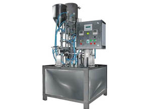
Capacitate: cca. 1200 buc/h, (functie de marimea dozei si vascozitatea produsului ambalat)
Cantitate dozata: - 200...500 ml
Destinatie: ambare smantana si produse proaspete (iaurt, sana, chefir etc)
Ambalaje:
- 1 pahare preformate, termosudabile, cu Ø = 75 si 95 mm
- 2 capace din folie de aluminiu, termosudabile, cu Ø = 75 si 95 mm
Operatiile efectuate in mod automat sunt: preluare pahar din magazia de pahare, dozare produs, preluare capac din magazia de capace, termosudare capac pe pahar, aplicare data pe suprafata capacului, evacuare pahare pe jgheabul de evacuare.
Masina semiautomata de ambalare la pahar
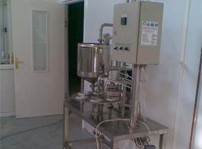
Capacitate: cca. 300 buc/h, (functie de marimea dozei si vascozitatea produsului ambalat)
Cantitate dozata: 200...500 ml
Destinatie: ambare smantana si produse proaspete (iaurt, sana, chefir etc)
Ambalaje:
- 1 pahare preformate, termosudabile, cu Ø = 75 si 95 mm
- 2 capace din folie de aluminiu, termosudabile, cu Ø = 75 si 95 mm
Operatiile efectuate in mod automat sunt: dozare produs, preluare capac din magazia de capace, termosudare capac pe pahar.
Operatiile efectuate manual sunt: alimentare cu pahare, evacuare pahare inchise si aplicare data.
Vana mecanizata fabricare branzeturi
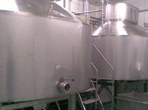
Capacitate: - 500...3000 l
Asigura pasteurizarea laptelui la 65°C si racirea la temperatura de prelucrare, agitarea laptelui, coagularea, taierea si maruntirea coagulului in vederea obtinerii casului. Tip vana: deschisa sau inchisa, de forma cilindrica sau ovala, verticala, prevazuta cu manta dubla prin care circula agentii termici (de incalzire si racire).
Componenta:
- 1 vana prevazuta cu:
- sistem de agitare, taiere si maruntire mecanizat;
- motor cu turatie variabila (6 rot/min - 26 rot/min);
- racord de evacuare DN 80 - 2 postament de deservire
- 3 furtun flexibil cu insertie (3 m)
Separator de coagul
Asigura separarea zerului din coagul.
Componenta: sita cilindrica pentru separare, rezervor pentru colectare zer, pompa centrifuga pentru vehiculare zer.
Volum rezervor: - 300 l
Crintă multifunctionala cu presare pneumatica
Asigura distribuirea coagulului in forme, presarea si eliminarea treptata a zerului din coagul. Presarea se face pneumatic.
Presa pneumatica
Presa pneumatica este constructie inox, orizontala, si asigura presarea bucatilor de branza in vederea eliminarii zerului. Presa este prevazuta cu 10 randuri de presare distribuite pe 5 niveluri pe verticala. Fiecare rand are actionare pneumatica independenta.
Presa este prevazuta cu instalaţie de automatizare cu posibilitatea programării parametrilor de proces (presiune, timp).
Instalatie continua de formare cascaval
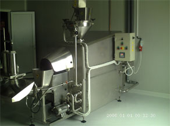
Capacitate: 300 kg/h
Asigura maruntirea casului, oparirea, formarea si dozarea bucatilor de cascaval, sau branza Mozzarella la gramaje diferite (200...2000 g).
Oparirea si framantarea masei de branza se face intr-o baie de saramura fierbinte la temperaturi de 75-85ºC.
Temperatura de oparire este controlata automat.
Vas de imersie
Asigura mularea foliei de plastic pe bucata de branza ambalata in vid.
Volum: 70 l
Temperatura de lucru: 85-90ºC
Incalzirea apei se face cu ajutorul rezistentelor electrice.
Vas preparare branza topita
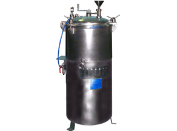
Asigura taiere-maruntire, incalzire amestec, omogenizare, evacuare mirosuri straine, evacuare produs finit.
Volum vas: 50...160 l
Agent termic de incalzire: apa fierbinte 95-98ºC sau abur
Vana saramurare branzeturi
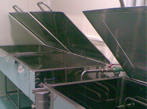
Vana are formă paralelipipedică, este executată din oţel inoxidabil şi este prevazuta cu capace, serpentina de racire cu apa gheata, racord de evacuare cu sită şi ştuţ pentru furtun.
Putinei
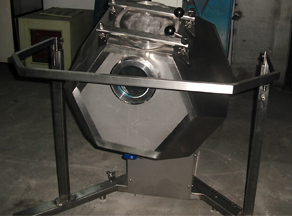
Asigura transformarea smantanii in unt prin baterea smantanii si malaxare.
Volum: 160 l
Tip: poliedru, prevazut cu hublou sticla, rama de protectie, panou de comanda si control.
Instalatie de spalare in circuit inchis (cip)
Asigura clatirea, spalarea, limpezirea si dezinfectarea automata, in circuit inchis a tancurilor izoterme, a instalatiilor de pasteurizare, a vanelor inchise si a tuturor traseelor de circulatie a laptelui.
Componenta:
- 1 tancuri pentru: -solutii de spalare bazica sau acida; capacitate 500...2000 l;
- 2 acumulare apa de clatire; capacitate 1000...3000 l;
- 2 schimbator de caldura cu placi;
- 2 electropompe de vehiculare solutii de spalare si apa de limpezire;
- 2 pompe pentru dozare solutii de spalare; instalatie electrica si automatizare.
Masina de spalare navete
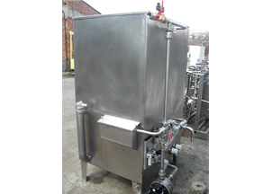
Asigura spalarea cu solutie bazica si clatirea ambalajelor colective (navete din material plastic).
Capacitate: 60 buc/h
Agent termic de spalare: apa calda 45-50ºC